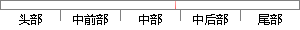

1 系统开发环境的搭建
片段位置图

相似结果
相似片段：操作系统的开发环境搭建 对于进行操作系统开发的爱好者而言,最困难的事情之一就是不知道从何处下手开发。很多书籍对操作系统的原理进行了深入的阐述,但是似乎没有...
| 标题 | 《操作系统的开发环境搭建》 |
| 对比库 | PaperRater云论文库 |
| 网址 | http://www.360doc.com/content/09/0603/09/29630_3760700.shtml |
| 相似率 | 100% （严重抄袭） |
※ 片段修改建议 ※
近似词参考：- 环境：情况
系统自动生成语句：1 系统开发情况的搭建
注：本片段修改建议为系统自动生成，仅供参考。